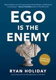

Ego Is The Enemy
Book Notes
March 19, 2017

Ego Is The Enemy, by Ryan Holiday, came highly recommended by Derek Sivers. It explores how remaining humble and embracing a learning mindset can lead to success. Here are my favorite highlights:
"If ego is the voice that tells us we’re better than we really are, we can say ego inhibits true success by preventing a direct and honest connection to the world around us."
"If you start believing in your greatness, it is the death of your creativity."
"Suppress ego early before bad habits take hold."
"The ability to evaluate one’s own ability is the most important skill of all."
"There’s a weak side to each of us, that—like a trade union—isn’t exactly malicious but at the end of the day still wants get as much public credit and attention as it can for doing the least. That side we call ego."
"What a lot of us do when we’re scared or overwhelmed by a project: everything but focus on it."
"What you choose to do with your time and what you choose to do for money works on you."
"The pretense of knowledge is our most dangerous vice, because it prevents us from getting any better. Studious self-assessment is the antidote."
"To become great you need to have someone better that you can learn from, someone lesser who you can teach, and someone equal that you can challenge yourself against."
"Today, books are cheaper than ever. Courses are free. Access to teachers is no longer a barrier—technology has done away with that. There is no excuse for not getting your education."
"Develop a system for winning."
Passion typically masks a weakness. Its breathlessness and impetuousness and franticness are poor substitutes for discipline, for mastery, for strength and purpose and perseverance. You need to be able to spot this in others and in yourself, because while the origins of passion may be earnest and good, its effects are comical and then monstrous.
"Purpose, you could say, is like passion with boundaries."
"Hire professionals and use them. They ask questions, they ask what could go wrong, they ask for examples. They plan for contingencies. Then they are off to the races. Usually they get started with small steps, complete them, and look for feedback on how the next set can be better. They lock in gains, and then get better as they go, often leveraging those gains to grow exponentially rather than arithmetically."
"Passion is form over function. Purpose is function, function, function."
"Greatness comes from humble beginnings; it comes from grunt work. It means you’re the least important person in the room—until you change that with results."
"Help yourself by helping others."
"The person who clears the path ultimately controls its direction, just as the canvas shapes the painting."
"It doesn’t degrade you when others treat you poorly; it degrades them."
"Brush it off and work harder. Play the game. Ignore the noise; for the love of God, do not let it distract you. Restraint is a difficult skill but a critical one."
"It is a timeless fact of life that the up-and-coming must endure the abuses of the entrenched."
"You’re not able to change the system until after you’ve made it. In the meantime, you’ll have to find some way to make it suit your purposes."
"We live in a world that tells us to keep and promote a “personal brand.” We’re required to tell stories in order to sell our work and our talents, and after enough time, forget where the line is that separates our fictions from reality."
"Be part of what’s going on around you. Feast on it, adjust for it."
"There’s no one to perform for. There is just work to be done and lessons to be learned, in all that is around us."
"Receive feedback, maintain hunger, and chart a proper course in life."
"If you can’t swallow your pride, you can’t lead."
"Every time you sit down to work, remind yourself: I am delaying gratification by doing this."
"Ego has the same roots—insecurity, fear, a dislike for brutal objectivity."
"Man is pushed by drives,” Viktor Frankl observed. “But he is pulled by values.”
"We must understand that we are a small part of an interconnected universe. On top of all this, we have to build an organization and a system around what we do—one that is about the work and not about us."
"Any man I meet is my master in some point, and in that I learn of him."
"As we first succeed, we will find ourselves in new situations, facing new problems. The freshly promoted soldier must learn the art of politics. The salesman, how to manage. The founder, how to delegate. The writer, how to edit others. The comedian, how to act. The chef turned restaurateur, how to run the other side of the house."
"As our island of knowledge grows, so does the shore of our ignorance."
"Simple but exacting standards matter more than some grand vision or power trip."
"The founding of a company, making money in the market, or the formation of an idea is messy. Reducing it to a narrative retroactively creates a clarity that never was and never will be there."
"The way to do really big things seems to be to start with deceptively small things."
"Instead of pretending that we are living some great story, we must remain focused on the execution—and on executing with excellence."
"Competitiveness is an important force in life. It’s what drives the market and is behind some of mankind’s most impressive accomplishments. On an individual level, however, it’s absolutely critical that you know who you’re competing with and why, that you have a clear sense of the space you’re in."
"Sit down and think about what’s truly important to you and then take steps to forsake the rest."
"Ego says that sure, even though you’re just starting to get the hang of one thing, why not jump right in the middle of another? Eventually, you say yes to too much."
"Some of the greatest and most dangerous delusions: entitlement, control, and paranoia."
"Your job is to set the priorities, to think big picture, and then trust the people beneath you to do the jobs they were hired for."
"When we’re aspiring or small time, we can be idiosyncratic, we can compensate for disorganization with hard work and a little luck. That’s not going to cut it in the majors. In fact, it’ll sink you if you can’t grow up and organize."
"In the end, we all face becoming the adult supervision we originally rebelled against."
"Days become less and less about doing and more and more about making decisions. Such is the nature of leadership. This transition requires reevaluating and updating your identity. It requires a certain humility to put aside some of the more enjoyable or satisfying parts of your previous job. It means accepting that others might be more qualified or specialized in areas in which you considered yourself competent."
"Ego needs honors in order to be validated. Confidence, on the other hand, is able to wait and focus on the task at hand regardless of external recognition."
"Creativity is a matter of receptiveness and recognition. This cannot happen if you’re convinced the world revolves around you."
"Churchill’s Europe required one type of leader. Today’s interconnected world requires its own. Because there is so much information to be sorted through, so much competition, so much change, without a clear head . . . all is lost."
"Almost always, your road to victory goes through a place called failure."
"Whether what you’re going through is your fault or your problem doesn’t matter, because it’s yours to deal with right now."
"We're aspiring to much more than mere success. What matters is that we can respond to what life throws at us. And how we make it through."
"It’s far better when doing good work is sufficient. In other words, the less attached we are to outcomes the better. When fulfilling our own standards is what fills us with pride and self-respect. When the effort—not the results, good or bad—is enough."
"Success is peace of mind, which is a direct result of self-satisfaction in knowing you made the effort to do your best to become the best that you are capable of becoming."
"We can’t let externals determine whether something was worth it or not. It’s on us."
"Doing the work is enough."
"Ask yourself: Is this the person I want to be?"
"Shit happens and, as they say, sometimes shit happens in public. It’s not fun. The questions remain: Are you going to make it worse? Or are you going to emerge from this with your dignity and character intact? Are you going to live to fight another day?"
"When a team looks like they’re going to lose a game, the coach doesn’t call them all over and lie to them. Instead, he or she reminds them who they are and what they’re capable of, and urges them to go back out there and embody that."
"The only real failure is abandoning your principles."
"You’re not as good as you think. You don’t have it all figured out. Stay focused. Do better."
"This is characteristic of how great people think: It’s not that they find failure in every success. They just hold themselves to a standard that exceeds what society might consider to be objective success."
"People can get lucky and win. People can be assholes and win. Anyone can win. But not everyone is the best possible version of themselves."
"A person who can think long term doesn’t pity herself during short-term setbacks. A person who values the team can share credit and subsume his own interests in a way that most others can’t."
"Attempting to destroy something out of hate or ego often ensures that it will be preserved and disseminated forever."
"You know what is a better response to an attack or a slight or something you don’t like? Love."
"Maybe love is too much to ask for whatever it is that you’ve had done to you. You could at the very least try to let it go."
"it’s so easy to hate. Hate defers blame. It makes someone else responsible. It’s a distraction too; we don’t do much else when we’re busy getting revenge or investigating the wrongs that have supposedly been done to us. Does this get us any closer to where we want to be? No."
"Any fool can learn from experience. The trick is to learn from other people’s experience."